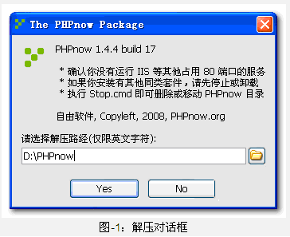
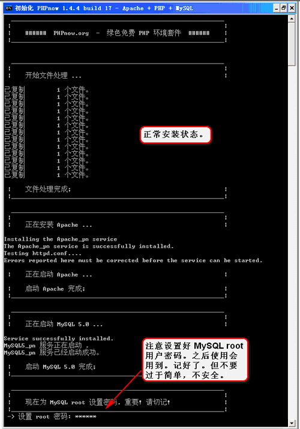
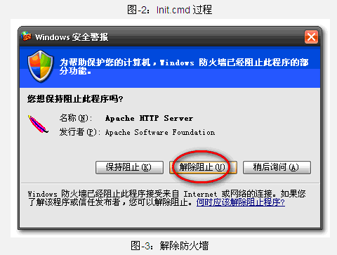
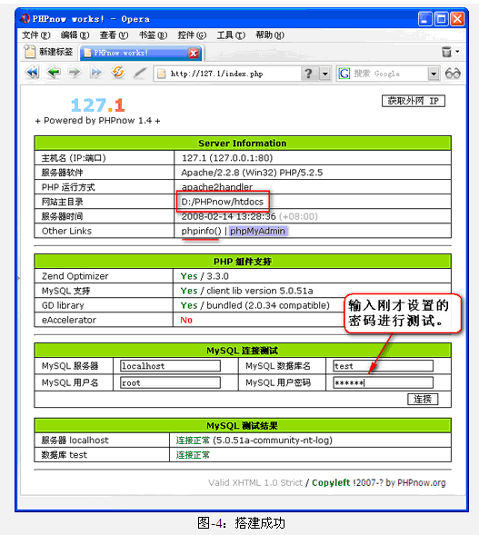

Phpnow一键安装
一、前言
PHPnow 是 Win32 下绿色的 Apache + PHP + MySQL 环境套件包。简易安装、快速搭建支持虚拟主机的 PHP 环境。附带 PnCp.cmd 控制面板，帮助你快速配置你的套件，使用非常方便。
安装 PHPnow 只需解压、初始化，就可得到一个标准的 PHP + MySQL 的服务器环境。然后就可以直接安装 Discuz！ 等程序，或者进行 PHP 开发调试。
官方网站：
http://www.phpnow.org
下载地址：
http://down.chinaz.com/soft/1850.htm
二、安装环境
首先下载PHPNow。PHPnow 有两种封装，一是 exe 自解压版（推荐，本文针对此版），二是纯 7z 档案（没有 exe 自解压）。 执行安装文件出现下图所示。回车即可。

在自动解压完毕后，将自动执行 Init.cmd 进行初始化动作。如 图-2 示：
期间可能出现防火墙提示，请允许。


Init.cmd 十秒钟即可完成。全部完成后，将自动打开默认页。
（如果没有，试试手动打开 http://127.0.0.1）
